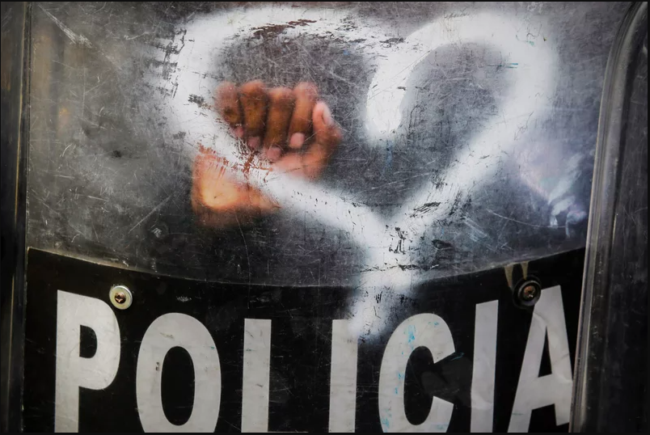
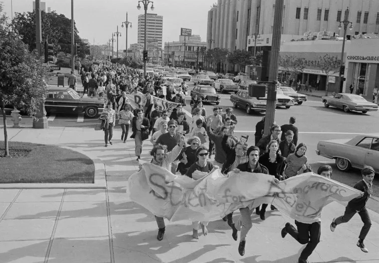
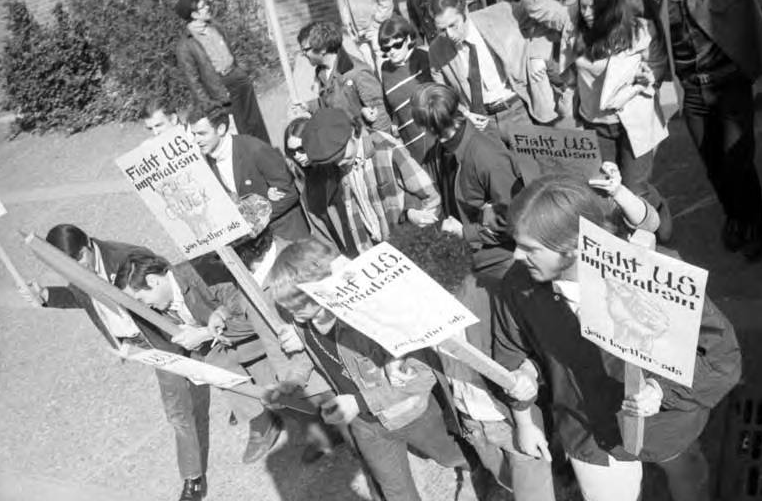
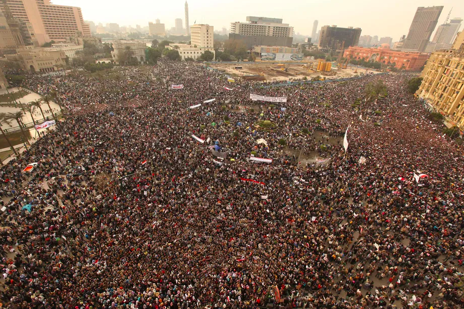
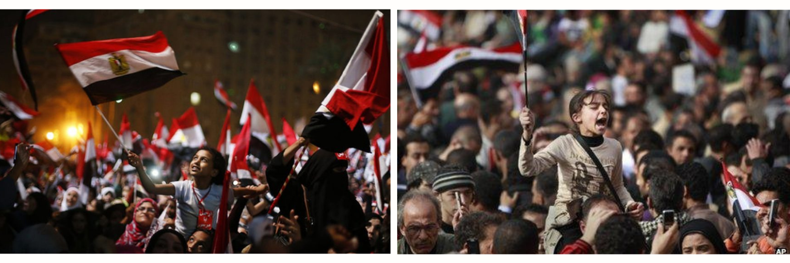
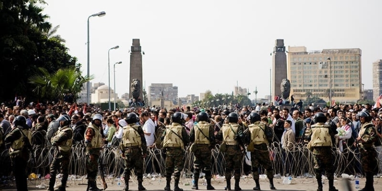
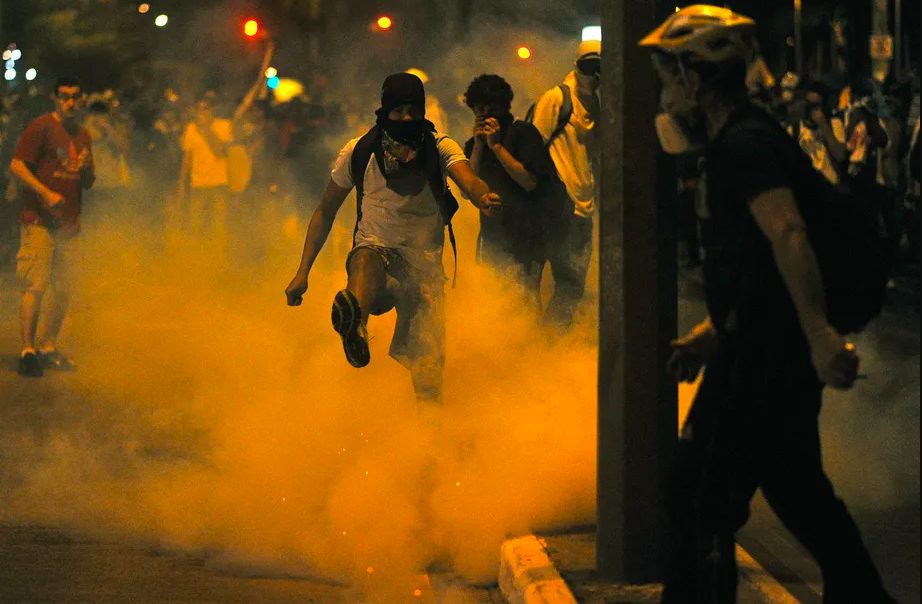
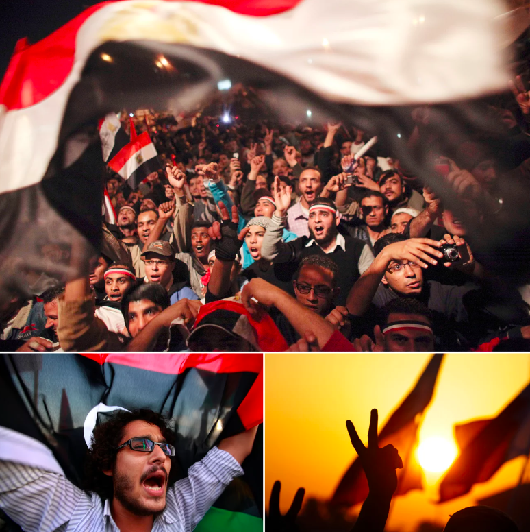
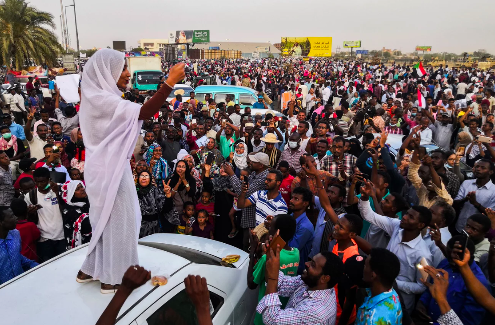

Amid fires set around Independence Square, known as the Maidan, in Kyiv, Ukraine, protesters demonstrate against the government of then-President Viktor Yanukovych in February 2014. Protesters called for Yanukovych's ouster over allegations of corruption and abandoning a trade agreement with the European Union. (Photo by Brendan Hoffman | Getty Images
Why did the Street Movements of the 2010s Fail?
From Brazil to Egypt, Turkey to Hong Kong, the 2010s saw a series of huge public uprisings. Yet many of them led to the opposite of what they asked for. I spoke to more than 200 participants across 12 countries to find out why
In the decade from 2010 to 2020, humanity witnessed an explosion of mass protests that seemed to herald profound changes. These protests started in Tunisia and erupted across the Arab world, before huge demonstrations also rocked countries like Turkey, Brazil, Ukraine and Hong Kong. By the end of the decade, protests were roiling Sudan, Iraq, Algeria, Australia, France, Indonesia, much of Latin America, India, Lebanon and Haiti. During these 10 years, more people took part in street demonstrations than at any other point in human history.
Many of these protests were experienced as a euphoric victory by their participants and met with optimism in the international press. But years later, after most of the foreign reporters have gone, we can now see how the uprisings preceded – if not necessarily caused – outcomes that were very different from the goals of the protesters. Nowhere did things turn out as planned. In many cases, things got much worse.
Take Brazil. On 13 June 2013, I was standing on a street in São Paulo reporting on a growing protest movement, when the military police, without warning, began shooting directly at the crowd. Teargas, shock bombs, maybe rubber bullets – it was hard to know in the moment. I found refuge in the entrance of a residential building. It took me a few moments to regain my senses and realise where I was, after I had confirmed I could still breathe with some regularity.
With heart-shaped graffiti spray-painted by activists on a shield, Nicaraguan riot police stand by in August 2019 as anti-government protesters in Managua call for the reinstatement of health workers who lost their jobs for assisting protesters during a deadly 2018 uprising against President Daniel Ortega. (Photo by Inti Ocon | AFP via Getty Images)
The police crackdown led to an explosion of sympathy for the demonstrations, which had been organised by the Movimento Passe Livre (MPL), a small group of leftists and anarchists demanding cheaper public transport. Millions of people took to the streets across Brazil, shaking the political system to its core. New demonstrators brought new demands – better schools and healthcare, less corruption and police violence – into the mass movement.
The movement wasn’t in direct opposition to Brazil’s ruling Workers’ party (PT). This left-leaning government had managed to combine economic growth with social policies that meaningfully alleviated poverty, garnering widespread support. It appeared to Luiz Inácio Lula da Silva and his successor, Dilma Rousseff, that the people on the streets in June 2013 were simply asking for more.
But you can draw a line from the 2013 protest movement to the events of just a few years later, which would culminate with Brazil being ruled by Jair Bolsonaro, the most radically rightwing elected leader in the world. Public services would fall apart as poverty mounted and officials bragged about the state murder of Brazilian citizens. In short, the Brazilian people got the exact opposite of what they appeared to ask for in June 2013. This is a pattern that played out across the world throughout the 2010s.
The protests of the 2010s, like many waves of political revolt before them, were contagious. Hong Kong’s “umbrella movement” was inspired by Occupy Wall Street, which was an attempt to replicate Tahrir Square in Egypt, which was inspired by the uprising in Tunisia. In fact, on the night of 13 June 2013, the crowd in São Paulo erupted into a chant as it was teargassed: “Love is over. Turkey is here!” They were referring to the protests and repression going on at the same time in Istanbul. I put this on Twitter and – in one of my first experiences with the ups and downs of social media – it went viral. Over the next few weeks, I received photos and messages from people in Gezi Park, the site of the Turkish protest, holding signs saying things like “The whole world is São Paulo” and “Turkey and Brazil are one”.
But was that right? Was the whole world really São Paulo? Was it actually correct to affirm that “everywhere is Tahrir”, as an Egyptian slogan had claimed earlier? By taking a truly global approach to the protests of 2010-2020, we can begin to see which factors were common across the many different locations, and which were crucially different. To understand what happened during that decade – and to learn from it – we need to pay attention to both.
From the rise of Abdel Fatah al-Sisi in Egypt to Beijing’s increasing control in Hong Kong, it might be possible to tell the story of the decade as the story of mass protests and their unexpected consequences. Indeed, what happens if we try to write the story of the world, from 2010 to 2020, guided by one puzzling question – how is it possible that so many mass protests apparently led to the opposite of what they asked for? Four years ago, I asked myself this question. After conducting more than 200 interviews with participants on the ground, reconstructing what they did and asking what they would have done differently, I think we have some answers.
History Shaped the Decade's Protests
One of the reasons why it may have felt that “everywhere is Tahrir” is that the protests had many things in common. You often heard that they were leaderless, “horizontally” organised, “spontaneous”, digitally coordinated events in city streets or public squares. They took forms that were said to “prefigure” the society they were meant to help bring about. So many protests looked like this that it seemed for a while as if this was the only shape that protest could take. But the first thing to understand about the 2010-2020 wave of protests is that the forms they took weren’t predetermined or “natural”, but the result of specific historical factors.
One of the groups that shaped the philosophy of modern protest was Students for a Democratic Society (SDS) in the US, a leftwing association inspired by the heroic achievements of the Black civil rights movement. In 1965, an unexpected surge of attention engulfed the organisation. That autumn, even though SDS had declined to lead a set of protests against the Vietnam war, the media chose to turn its focus on the group. (SDS already had a bit of a reputation as an anti-war outfit, so perhaps reporters, always pressed for time, had seen the name somewhere and thought they could use it to tell the wider story.)
Several hundred people affiliated with the SDS race through the Los Angeles Civic Center in a 1968 demonstration against the Vietnam war. (Photo by Harold Filan | AP Photo)
This presented two problems. First, who was supposed to do this? SDS didn’t have a press office, and its loose, quasi-leaderless structure made it difficult to decide who was supposed to speak for the organisation. Rifts emerged as the media identified arbitrary spokesmen and celebrities. And second, the sudden fame bestowed on the group created an even bigger issue. SDS was flooded with new members, tripling in size in a single year. But these new arrivals did not want to join SDS – they wanted to join the organisation they had read about in the newspaper, which didn’t actually exist. They showed up with longer hair, fewer ideological commitments and a strange set of assumptions about the organisation.
In the US, the “new left,” as SDS and associated groups often liked to call themselves, adopted very different practices to the “old left” and communist movements formed in the wake of the Bolshevik revolution. The preferred vehicle for change in that old tradition was the political party. Lenin had argued, in the context of the violent repression of tsarist Russia, for a small, hierarchically organised, vanguard of professional revolutionaries, who aimed to capture state power. He also believed that any purely spontaneous uprising, taking the path of least resistance, would simply adopt the ideology that was dominant in its society at the time. Because the ruling class had more power to propagate its ideology, the revolutionary movement would need to be guided by a coherent ideology of its own.
Conversely, SDS’s approach – perhaps the thing that was truly “new” about the new left – dictated that they should adopt organisational forms that they would like to see in the world they wanted to create. The name given to this was “prefigurative politics”: what you are doing now will show a glimpse of the world you want to live in tomorrow. In the 21st century, the prefigurative approach was combined with “horizontalism”, the idea – born in Argentina, then popularised by a 2006 book by US anarchist theorist Marina Sitrin – that organisations should be guided by participatory decision-making, and there should be no hierarchies. Underlying this approach is a deep suspicion of political representation: that is, of elites, such as politicians, acting on behalf of the masses.
Protesters marching and holding signs during Students for a Democratic Society (SDS) demonstration before hearing for students involved in Loew Hall incident on March 13, 1969 (Photo provided by University of Washington Libraries, Special Collections Division)
This kind of politics has always had its critics. In an iconoclastic 1972 essay, the feminist activist and theorist Jo Freeman denounced the “tyranny of structurelessness”. She claimed that when a movement insists it has no leaders, they emerge anyway; except that there are no fair and transparent mechanisms to select or remove those leaders. Often, a small clique of friends or the original members of a group end up exercising de facto power with no accountability. Freeman blamed putative structurelessness for holding back the women’s liberation movement in the 1970s, and making it impossible to achieve real wins.
From the 1960s on, protest became an obvious and well understood way that regular people could respond to injustice. And then, particularly after the collapse of the Soviet Union, the idea that the world was inexorably heading towards liberal democracy – and mass demonstrations against unjust regimes were an inevitable harbinger of such progress – was deeply embedded in the minds of western journalists, policymakers and the educated middle classes.
This view prevailed all the way into the 2010s. When the revolution broke out in Tunisia, and then in Egypt, it seemed to many foreign observers, and even some participants, that only one outcome was possible: democracy, freedom, progress.
It didn’t turn out like that.
Egypt's Shifting Revolution
It’s easy to forget now, but the movement that overthrew Egypt’s longstanding dictator, Hosni Mubarak, in 2011 originally started as a protest against police brutality. But on the afternoon of 25 January in Cairo, far more people showed up to the protest, announced by a small online group, than anyone expected. Marchers broke through the lines of police, who responded with their usual violence – but they were unprepared for the number of people who came out that day. The protesters charged past them to Tahrir Square.
Gehad, an activist I spoke to, didn’t take part: protests like this at Tahrir had been happening for years, and despite the recent fall of longtime dictator Ben Ali in nearby Tunisia, she figured this one would peter out, too. Then she saw the image of a man facing down a police vehicle, impervious to the blast of its water cannon, and something stirred inside her. She would join the revolt.
Protesters gather in Tahrir Square on February 1, 2011, in Cairo, Egypt. (Photo by Peter Macdiarmid | Getty Images)
As waves of young people and activists made their way toward Tahrir Square on 28 January, they were astounded to see new streams of people coming out of the mosque after Friday ceremonies. Together now, they chanted, “Bread, freedom, social justice!” and “The people want the fall of the regime” – a demand that not even the seasoned activists had planned to make three days earlier. As protesters from all over Egypt pushed forward, it felt as though something had shifted in the nature of time itself; it felt as if they were literally moving history forward.
The protest of 28 January was relatively spontaneous in that it came together very quickly, and it was indeed leaderless, horizontally structured and ideologically diverse. A huge mass of Egyptians went to battle with the police, and the police lost. Protesters burned down more than 90 police stations across the country that night. One wave of Egyptians battled police on Cairo’s Qasr al-Nil bridge, holding their ground while suspended over the Nile, pushing back, taking losses and then advancing again until the police simply retreated. At that point, the revolutionaries could have taken anything. They chose to stay in Tahrir Square, the default destination for many in the crowd.
- Vincent Bevins, American journalist and writer
This had not been planned, and some participants soon questioned why it happened. Would it not have made more sense to actually charge the halls of power and take control? Should a revolutionary movement not seize the television and radio stations so it can stop the regime from broadcasting its propaganda? It was all right there for the taking. But if they did that, who would have been in charge of deciding what to do with them? This was not a movement led by a revolutionary vanguard; it was a huge mass of individuals that, just days ago, were little more than an event on a Facebook page.
In any case, they took the square. And they stayed there. Over the next 18 days, Tahrir Square became a carnival of prefiguration and structurelessness, the symbol of the world of Egyptian resistance. Communists and tattooed lesbians broke bread with pious Islamists and children who lived on the street nearby, all of them united in opposition to Mubarak. Laughing, smiling, suffering, sacrificing and working together, these people created a new mini-society – keeping everyone fed, safe and healthy. Gehad had never felt more alive in her life.
(Photos by Mohamed Samir | Daily News Egypt; AP)
Western powers, which had backed Mubarak, didn’t know how to respond. But global media did. They turned their cameras towards Tahrir Square and sent their reporters to Cairo. One reference point appeared immediately: this was 1989, the fall of communism, but this time in the Middle East. The images certainly looked similar.
But who could western outlets get on TV to explain what was happening and what the movement wanted to achieve? This mass of people had no official representatives. So the journalists chose the people who could explain – ideally in English, and ideally in a vocabulary their viewers would appreciate. They were not likely to grab a teenager who lived on the street, addicted to cheap drugs, and put them on The Daily Show, even though some of these kids had fought most bravely against the cops. And they probably were not going to interview a fervent Islamist on CNN, even though the Muslim Brotherhood – which joined late, but certainly participated in the revolt – was the largest organised group in Tahrir Square.
By 11 February, Mubarak was gone. But what would happen in the years to come would dash the dreams of secular and leftist Egyptian revolutionaries. First, the Muslim Brotherhood would win elections; then a new protest movement, which was actually put together with support from elites and reactionary Gulf monarchies, would take on the elected government; and then the military would lead a coup – installing Sisi, who, since 2013, has overseen a regime even more brutal than Mubarak’s.
(Photo by Hossam El-Hamalaway | Flickr)
The Rise and Demise of Brazil's Leftist Movement
On the other side of the Atlantic, in the second-most populous country in the western hemisphere, an eerily similar set of events were beginning to play out. The Brazilian group campaigning for free public transport in São Paulo, the MPL, were dogmatically horizonalist. Although the MPL was formed in 2005, in spirit it was a child of the late 1990s, growing out of the alter-globalisation movement, which staged protests against the World Trade Organization in Seattle in 1999. The alter-globalisation movement was more anti-authoritarian and even more apparently structureless than any of the other major protest movements of the 20th century. In its founding charter, the MPL declared there would be no leaders or specialised roles, and decisions would be made by consensus. This was definitely not Leninism. For Mayara Vivian, an energetic, charismatic co-founder of the organisation – she was only 15 years old at the time – this was self-evident. “It’s fundamental,” she told me when we spoke in 2021. “If we are fighting to build a democratic city, we need to have a democratic movement and struggle in a democratic way.”
In 2013, the mayor of São Paulo, the leftwing PT academic Fernando Haddad, scheduled a rise in the price of a bus ride. The MPL sprang into action. In their meetings, which would last for hours because of the need to reach consensus, they planned their strategy for forcing Haddad to reverse the 20-centavo hike. They decided on the exact image they would like to see on the cover of the city’s main newspapers after their first intervention: tyres and turnstiles engulfed in flames, in front of a sign that read, “IF THE FARE DOES NOT COME DOWN, THE CITY WILL COME TO A HALT”.
The mayor recognised the group as legitimate, and offered negotiations. But the young leftists and anarchists were betting on a raucous popular revolt as the best way to achieve their goal. On a personal level, Haddad became increasingly annoyed with the MPL. They did not respect the differences between politicians, he felt; they lumped him in with the repressive conservative apparatus that he had fought against as a young dissident. He did not believe he was trying to co-opt anybody, he told me in 2021; the PT was deeply proud of the mechanisms it had developed over the decades to involve social movements in decision-making and bring the streets into the halls of power. These kids were not only refusing to play by the rules; they were pretending that the rules didn’t exist.
A demonstrator kicks a tear gas shell during clashes with the police outside the Mineirao stadium in Belo Horizonte, on June 26, 2013. (Photo by Christophe Simon | AFP via Getty Images)
Then came that demonstration on 13 June, violently put down by the police, which catalysed the nationwide movement. Soon hundreds of thousands of people were participating, across the vast nation, making this the biggest demonstrations in Brazil since 1992. But as the movement grew, so did the range of people involved. Some new protesters were rightwingers, or linked to well funded groups based in the US, who were fiercely anti-Lula and would call him a “thief”, or pushed to shift the focus to government corruption. Eventually, the MPL got what they wanted – São Paulo’s bus fares went back down. But, by this point, the movement had acquired a life of its own. A new “grassroots” group with a name sounding intentionally similar to MPL – the MBL, Movimento Brasil Livre – started organising its own demonstrations. Within a few years, the MBL was leading calls for the impeachment of the president, Dilma Rousseff.
Before June 2013, about 5% of Brazilians believed corruption was the biggest problem facing the country. That number steadily began to rise, starting with the explosion of protests that month. Two years later, the number was up to 21%. As the economy flagged in Rousseff’s second term, the rightwing movement that found its place on the streets in June 2013 rose to the occasion, organising mass demonstrations and pretending to be the type of group – leaderless, grassroots, politically independent – that the MPL actually was, and that it certainly was not. (All of this was eerily reminiscent of the circumstances that led to the military coup that installed Sisi as dictator in Egypt.) Along with the famously corrupt US-backed Lava Jato “anti-corruption” crusade, this set the stage for the parliamentary coup carried out against Rousseff in 2016, the imprisonment of Lula, and the 2018 victory of Jair Bolsonaro. Leaders of both Lava Jato and MBL joined the government in 2019.
In the years that followed their initial victory Mayara Vivian had fallen into depression, especially since the MPL began to split into pieces. She was tired of hearing, in leftwing media and from people who had not been there in 2013, that she and her friends in the MPL were ultimately responsible for the coup. This was now a common narrative, especially favoured by militants in the PT, and it drove her crazy.
Lessons from the Streets
What went wrong? I spent years travelling around the world, talking to people who helped create mass protests in Tunisia, Egypt, Bahrain, Yemen, Turkey, Brazil, and Ukraine, interviewing the experts and government officials who tried to grapple with their meaning. I would ask what they thought had happened. I did not seek to cast blame. Most people who spoke with me know very well that things can go terribly wrong regardless of intentions, and the conversations often became difficult. Many of these individuals have suffered for years trying to understand the events of the past decade.
I always put my question something like this: “If you could speak to a teenager somewhere around the world right now, someone who might be fighting to change history in some kind of political struggle, what would you tell them? What lessons did you learn?”
The first lesson I learned from these activists is an obvious one, but all too easy to forget: history continues to unfold after the original explosion of protest. A revolution does not start and end with a single bolt of lightning – whether that’s a head of state unexpectedly resigning, like Mubarak, or the mayor of Brazil’s largest city giving in to your demands.
I spoke about this with Mahmoud Salem, an Egyptian blogger who fought for Tahrir Square in 2011. It was with bitter irony, and a big helping of his self-deprecating wit, that he brought up the final battle scene from The Lord of the Rings, when Sauron is defeated: why did they think that if Mubarak fell, all evil would simply disappear from the land? When the Brazilian MPL activist Lucas Monteiro told me that the group had not prepared for what happened after they successfully killed the fare hike, he smiled and then burst into humbled laughter. They had forgotten quite a big detail!
- Hossam Bahgat, Egyptian human rights activist
When I asked both Haddad, then São Paulo’s mayor, and Mayara Vivian, the young activist who had squared up against him, why Brazil’s progressive protest movement had failed, they both said the exact same thing: Não existe vácuo político – “There is no such thing as a political vacuum.” The idea is that if you blow a hole in the centre of the political system, taking power away from those who have it, then someone else is going to enter the empty space and take it. Unclaimed political power exerts an irresistible gravitational pull on anyone who might want it, and at every moment in recorded history, someone has wanted it.
The particular repertoire of contention that became very common from 2010 to 2020 – apparently spontaneous, digitally coordinated, horizontally organised, leaderless mass protests – did a very good job of blowing holes in social structures and creating political vacuums. But it was much less successful when it came to filling them. And there was always some force ready to step in. In Egypt, it was the military. In Bahrain, it was Saudi Arabia and the Gulf Cooperation Council. In Turkey it was Recep Tayyip Erdoğan. In Hong Kong it was Beijing. In Brazil, Rousseff was not removed, not immediately; but to the extent that she lost influence in June 2013, that power did not fall to the anti-authoritarian left, as the MPL would have liked.
Top: Egyptians in Cairo's Tahrir Square celebrate the resignation of longtime President Hosni Mubarak in February 2011. Bottom left: A Libyan protester at Martyrs' Square in Tripoli in October 2011. Bottom right: Protesters wave flags and call for the fall of Bahrain's government in Maqsha, Bahrain, in November 2011.(Photos by: Tara Todra | Whitehill/AP; Hasan Jamali | AP; Suhaib Salem | Reuters)
It was not just Mayara and Haddad who overlapped in their answers to my question. There was one kind of response that kept coming up. I think Hossam Bahgat, an Egyptian human rights activist, put it best, or at least, the most directly: “Organise. Create an organised movement. And don’t be afraid of representation,” he told me without hesitation, in his office in Giza. “We thought representation was elitism, but actually it is the essence of democracy.”
I heard answers like this over and over, confirming research compiled by scholars. As early as 1975, the sociologist William Gamson found that movements succeed more often when they deploy hierarchical forms of organisation. In a wide-ranging 2022 study, the political scientist Mark Beissinger found that loose uprisings of the type seen in Ukraine’s Maidan protests of 2013 and 2014 tend to increase inequality and ethnic tensions, while they do not consolidate democracy or end corruption.
Not everyone I met had come round to favouring “verticalism” and hierarchy, and insisting that representation matters. Some people stayed in the same place. Mayara Vivian, for example, remains mostly true to the ideals she adopted as a young punk. But in the years I spent doing interviews, not one person told me that they had become more horizontalist, or more anarchist, or more in favour of spontaneity and structurelessness. Everyone who moved did so in the same direction, closer to a classically “Leninist” view on how to organise political movements.
Left: A pro-democracy demonstrator gestures after police fired tear gas towards protesters near the Hong Kong government headquarters, Sept. 28, 2014. Right: Hong Kong police walk down a stairwell. (Photos by Xaume Olleros | AFP/Getty Images; Dale de la Rey | AFP/Getty Images)
Reflecting on the Aftermath of Mass Protests
The protests that rocked the world from 2010-2020 didn’t all end in failure (and even failures contain small victories). In South Korea the “candlelight revolution” led to the impeachment of Park Geun-hye, and Chile’s 2019 “estallido social” put the 2011 student protest generation into power, even if they have so far failed to deliver on the dreams of a new constitution. It is entirely possible that the current Chilean government will fail; it always is. It may be the case that victory takes a long time; that is no problem, as the future lasts a long time.
It’s also true that, even in the case of protests that were clear failures, participants would tell me: we have planted the seed for something bigger. In the long term, these struggles can become part of something greater, and we can come back stronger than ever and win. Not everyone said it. But this possibility hung over all my interviews. Without it, there would be no reason for these people to give me their time in the first place.
Standing on a white car and wearing a traditional white thobe, Sudanese student Alaa Salah led protest chants against longtime dictator President Omar al-Bashir in Khartoum in April 2019. A social media post showing a photo of Salah went viral, and she was dubbed Sudan's "Lady Liberty." Sudan's military ousted Bashir that same month. (Photos by: AFP via Getty Images)
The people I spoke to each had their own suggestions, based on hard-won experience, for how to organise political protest movements in the future. But a handful of ideas came up repeatedly. One must be very aware of what a “protest” is doing, and how it can lead to improvements on the real configurations of power in your society. Too often, approaches were copied and pasted from different countries, or different moments, to situations where they were inappropriate. One must not confuse tactics and strategy; a particular type of contention may get you through one phase of a struggle, but not the next. If the goal is to put pressure on existing elites, then strikes and boycotts often work much better than people walking back and forth across a city. If enough leverage is created to make demands, then someone must represent the group and negotiate the victories. If the existing elites can actually be removed – a revolutionary situation – then some group must be prepared to take their place and do a better job. In both of those cases, this has always been a relatively small group, compared with the rest of the population. The question is whether the people give this minority permission to speak for them.
But when they looked back on the experience of the protests – that intense, life-changing collective euphoria, the feeling that you and your fellow revolutionaries were remaking the world – my interlocutors were split.
For some of them, the horrible comedown, the plunge into depression that came after things did not work out, was something like a hangover. You can get yourself all messed up on revolutionary elan, just like you can drink to excess or lose yourself in drugs. It warps your senses and causes you to make poor decisions. It isn’t real, and you’re going to pay for it later.
Then there was another interpretation, just as common. It is the most real thing that one can ever feel. It is not an illusion at all; it is a stunning, momentary glimpse of the way that life is really supposed to be. It is how we can feel every single day in a world when artificial distinctions and narrowly self-interested activities melt away. When our society truly is participatory, when we are truly forging history in every movement and acting in love and harmony with our fellow human beings, we will be able to feel this way all the time. Over four years of interviews, across 12 countries, people went back and forth.
As I said, they couldn’t decide which one it is.
Adapted from If We Burn: The Mass Protest Decade and the Missing Revolution, published by Headline and available at guardianbookshop.com